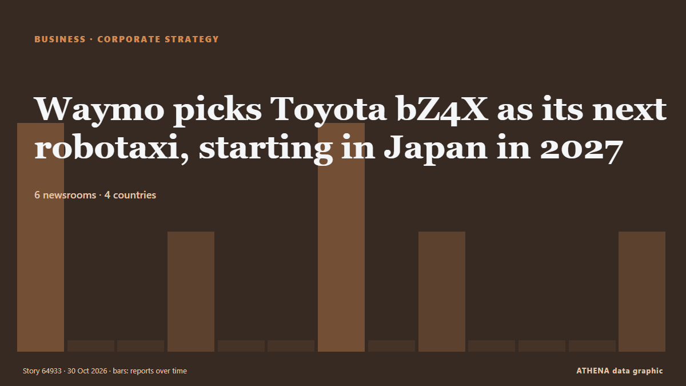

Estrategia empresarial
| 18 oct | 0 |
|---|---|
| 19 oct | 0 |
| 20 oct | 0 |
| 21 oct | 0 |
| 22 oct | 1 |
| 23 oct | 3 |
| 24 oct | 0 |
| 25 oct | 0 |
| 26 oct | 0 |
| 27 oct | 6 |
| 28 oct | 5 |
| 29 oct | 7 |
| 30 oct | 1 |
| 31 oct | 0 |
Los titulares se muestran en inglés, tal como se publicaron.

Waymo picks Toyota bZ4X as its next robotaxi, starting in Japan in 2027
Waymo is adding the Toyota bZ4X to its robotaxi lineup. de Electrek
One private equity–backed company owns every methadone clinic in Montana
In plain terms: Private equity firms haven’t been building new capacity – they’ve been buying up the capacity that already existed. de Fortune
President invites Russia tomake Namibia production hub
President Netumbo Nandi-Ndaitwah has invited Russian companies to invest in Namibia and establish joint ventures that would turn the country into a production centre for the wider African market. de New Era (Namibia)
Eldorado Gold posts $118m net profit; Skouries and McIlvenna Bay advance towards commercial production
Eldorado Gold’s management is focusing on its Skouries and McIlvenna Bay projects as both advance towards commercial production. de Naftemporiki (English)
Mbappe apologises for Mao joke after brands drop him
Kylian Mbappe has apologised for his "ill-judged" comment about former Chinese leader Mao Zedong, which has led to Chinese brands dropping the Real Madrid forward. de RTÉ News
iPhone Duo or iCrack Duo? Apple’s foldable stumbles into first-gen pitfalls
Dubai: Apple's first foldable smartphone, the iPhone Duo, opens for pre-orders in the UAE at 4pm today, Friday, October 16. de Gulf News
US cruise ship halts world voyage over fuel costs, 200 passengers stranded in Cambodia
Villa Vie Residences has suspended operations of its residential cruise ship Villa Vie Odyssey in Cambodia, forcing residents to disembark as soaring fuel costs push the company toward financial… de gCaptain
Hyundai Motor reports 5.5% rise in Q3 operating profit, beats forecasts
Its operating profit for the July to September period is 2.7 trillion won. de The Business Times
Chinese EVs push imported models ahead of South Korean vehicles
Imported electric vehicles captured more than half of South Korea's new electric passenger-car registrations during the first nine months of 2026, marking the first time the share of domestically… de DigiTimes Asia
Amazon cloud capacity sold out through 2027, CEO Jassy says
With two Gen Z children of his own, Amazon CEO Andy Jassy says AI can help young people get ahead—but human judgment and ingenuity remain essential. de Fortune
Safaricom confirms nationwide M-Pesa outage
NAIROBI, Kenya Oct 28 – Kenyans woke up to challenges accessing M-PESA on Wednesday morning, with users reporting difficulties completing mobile money transactions as Safaricom confirmed a system… de Capital FM
Toyota's April-Sept. global sales, output drop on weaker China sales
Toyota Motor Corp. said Thursday global sales and production dropped in the April-September period from a year earlier due to weaker. de Mainichi (English)
First HoldCo’s nine-month profit leaps 63% to N744.5 billion
The commercial banking division of the group accounted for 94 per cent of turnover and 87.4 per cent of post-tax profit. de Premium Times
US bans vehicles from China’s BYD at base in Japan
NAHA, Japan (Kyodo) -- U.S. Air Force's combat wing at Kadena Air Base in Japan's Okinawa Prefecture said Monday it has banned vehicles made by China' de Mainichi (English)
US bans imports from Chinese genomics companies
The US Department of Homeland Security (DHS) said BGI Genomics, MGI Tech and Shenzhen BGI Technology, also known as BGI Group, had been added to the Uyghur Forced Labor Prevention Act Entity List. de Vanguard
Apple Shows First Touchscreen Laptops Amid Product Blitz
Apple CEO John Ternus unveiled the company's first touchscreen MacBooks on Wednesday, abandoning a long-held aversion to the technology as it caps a burst of product launches ahead of the holiday… de The Korea Times
Meta delays indefinitely its rollout of new commercial terms after publishers' concerns
Europe’s biggest news publishers are asking regulators in the EU and UK to stop Meta from introducing new business terms that they fear could allow the company to copy content from their websites for… de The Next Web
Discussion in Sofia Looks at Accelerated Gender Equality on Company Boards
Stakeholders seek fair policies to advance gender equality By Vivian Emoni Gender experts have called for inclusive policies that promote fairness, advance gender equality and strengthen social… de News Agency of Nigeria
AA Insurance hits $1 billion in annual premium revenue
Premium revenue reaches $1 billion mark for AA Insurance, while net profit drops 15%. de interest.co.nz